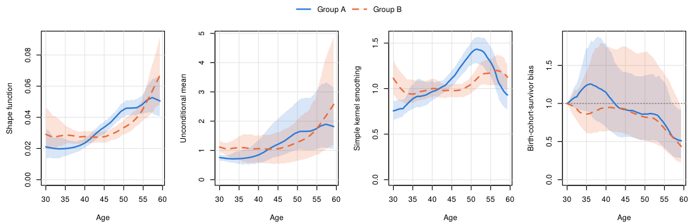

TrajChain estimates population-level biomarker trajectories from longitudinal cohort studies in which individuals enter at different ages and are followed until death or dropout. Two features of such studies distort naive age curves: deaths during follow-up (biomarkers are only observed in survivors) and delayed entry (left truncation, which becomes informative when birth cohorts differ). The package implements the nonparametric framework of Hu, Wu, Zhao and Sun, in which a latent variable Z^0 that may be associated with both death and birth cohort multiplies a common shape function f(t):
E\{Y^0(t) \mid Z^0, T^0 = s\} = Z^0 f(t), \qquad t \le s.
Under conditional independence assumptions on study entry and dropout, the selection effects cancel in the ratio f(t)/f(t - v), which is therefore identified from consecutive measurements; TrajChain estimates these ratios by kernel smoothing and recovers f over the whole age range by ratio chaining, without modeling survival, truncation or dropout. It then estimates the unconditional mean trajectory and quantifies the combined birth-cohort-survivor bias.
Features
- Shape function by ratio chaining for equally spaced visits, and by penalized ratio matching for widely or unequally spaced visit schedules.
- Unconditional mean trajectory, birth-cohort-survivor bias and naive Nadaraya–Watson curve, with two estimators of the latent mean (baseline-only or pooled visits) for different assumptions on dropout.
- Data-driven tuning: cross-validation for the bandwidth constant and for the penalty.
- Subject-level bootstrap standard errors and pointwise confidence bands, with optional parallel computation.
- Graphics for one or several groups, and simulators for the main simulation designs of the paper (random or informative truncation, equally or unequally spaced visits) together with their true curves.
- Verified against the original research code that produced the results in the paper: the regression tests reproduce its estimators, cross-validation, bootstrap and data generators to numerical precision.
Installation
Install the development version from GitHub:
# install.packages("remotes")
remotes::install_github("pingbohu43/TrajChain", build_vignettes = TRUE)Example
simcohort is a simulated cohort with a baseline visit and two follow-up visits every 16 months, deaths, dropout and informative delayed entry. We estimate the trajectories on ages 30–59.33 (m = 22 grid points) for each group and compare them, with 95% bootstrap bands:
library(TrajChain)
fit_group <- function(g) {
d <- subset(simcohort, group == g)
Y <- visit_matrix(d, id = "id", visit = "visit", value = "marker")
A <- d$entry_age[match(rownames(Y), d$id)]
trajchain(Y, A, visit_gaps = 16 / 12, tau0 = 30, m = 22)
}
fitA <- fit_group("A")
fitA
#> <TrajChain fit>
#> Shape estimator : ratio chaining (Section 3)
#> Mean estimator : baseline measurements (equation 5)
#> Subjects : 300, with 762 measurements (2.54 per subject)
#> Visit gaps : 1.333, equally spaced (2 follow-up visits)
#> Age interval : [30, 59.33], m = 22 grid points (step 1.333)
#> Bandwidths : h = 2.832 (ratio), h' = 5.48 (mean)
#>
#> age shape mean bias nw
#> 30.00 0.02102 0.7559 1.0000 0.7559
#> 35.87 0.02016 0.7250 1.2547 0.9097
#> 41.73 0.02693 0.9685 1.0310 0.9985
#> 47.60 0.03929 1.4130 0.8901 1.2578
#> 53.47 0.04632 1.6659 0.8329 1.3874
#> 59.33 0.05049 1.8157 0.5123 0.9301
bootA <- trajchain_boot(fitA, B = 200, seed = 1)
bootB <- trajchain_boot(fit_group("B"), B = 200, seed = 2)
plot_trajectories(list("Group A" = bootA, "Group B" = bootB))
The naive kernel smoother of the observed markers (third panel) bends down at older ages because survivors to older ages are a selected group; the shape function and the unconditional mean remove this selection, and the fourth panel quantifies it.
Main functions
| Function | Purpose |
|---|---|
trajchain() |
Fit the shape function, unconditional mean and birth-cohort-survivor bias |
cv_bandwidth(), cv_lambda()
|
Cross-validation for the bandwidth constant and the penalty |
trajchain_boot() |
Subject-level bootstrap standard errors and confidence bands |
plot_trajectories() |
Plot one or several fits, with bootstrap bands |
ratio_estimate() |
Kernel estimator of f(t)/f(t - v) |
visit_matrix() |
Long-format data to a subject-by-visit matrix |
simulate_cohort(), sim_truth()
|
Simulation designs of the paper and their true curves |
See vignette("TrajChain") for a worked analysis and vignette("simulation") for the simulation designs, unequally spaced visits and tuning.